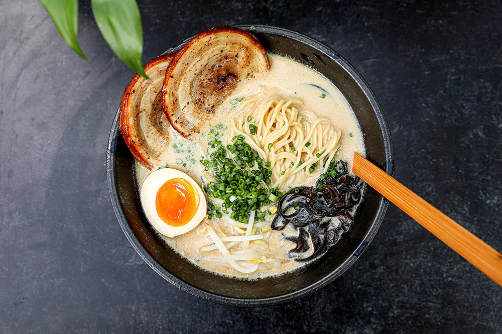

Tonkotsu is a unique style of ramen consisting of an extremely rich, fatty pork broth, fresh noodles, soft-yolk eggs, and tender pork belly that melts in the mouth. It is so popular and special that it could be a dish of its own, not just a ramen style. The ramen is usually topped with scallions for brightness and vibrancy, bamboo shoots for a crunchy, nutty flavor, nori seaweed for crispness, and sweet corn for an even better flavor. The rich broth is developed by cooking the pork bones for a very long time, until the collagen and fat dissolve, resulting in a unique, creamy texture of the dish.
Meal prep time : 13 hours 20 minutes
Servings : 6